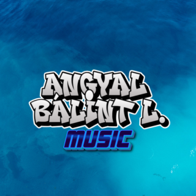
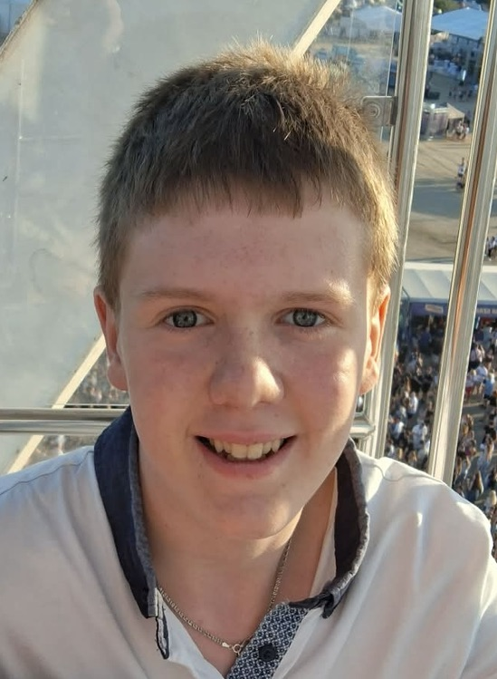

Én 2025 december óta adok ki zenéket a streaming oldalakra, előtte is csináltam és írtam zenéket, viszont azok még csak próbák voltak, hogy belelendüljek ebbe az egészbe. Az első zenémet már azóta leszedtem, mivel azt csak azért raktam ki, hogy kapjak kritikákat, hogy min kéne javítani, és azóta fejlődött annyit a zenei tudásom, hogy azt érdemes volt leszedni.

Én egy Harley Benton márkájú, telecaster formájú elektromos gitárral szoktam zenélni. Van egy M-Audio M-track duo hangkártyám, azzal veszem fel a gitáromat a BandLab DAW-ba, ahol meg megvágom a zenét, meg jól megeffektezem. Mikrofonom egy Marantz MPM-1000 stúdiómikrofon.
Már a gitár része megvan az új dalnak, viszont dalszövegek is íródtak mostanában, de mindig van bennem egy olyan érzés, hogy ez a dalszöveg jobb lesz ehhez a témához, amit majd most írok (mint a legtöbb kezdő zenészbe, úgy bennem is van ez az érzés).